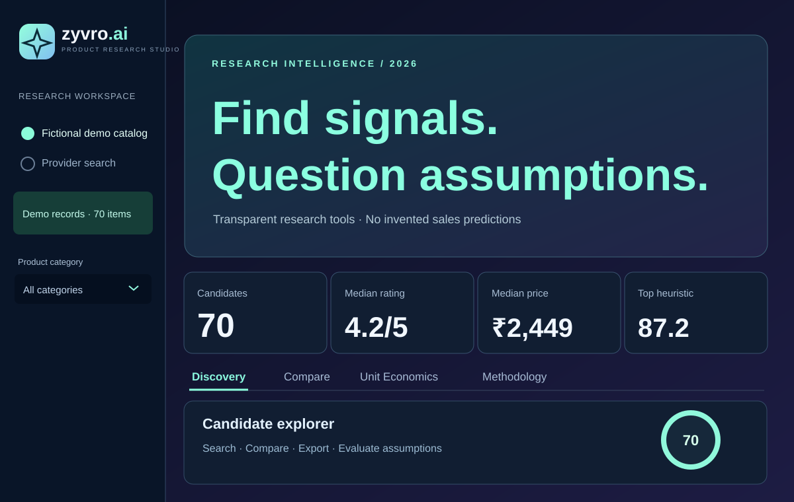

ECOMMERCE ANALYTICS / PRODUCT RESEARCH / 2026
ZYVRO AI V2.
A product discovery and unit-economics research studio combining interpretable ranking heuristics, product comparisons, configurable scenarios and optional live listing search.

Stylized portfolio artwork based on the V2 Streamlit dashboard; not a captured website screenshot.
What I built
The Discovery workspace supports searching, filtering, sorting and exporting product candidates. Compare supports side-by-side evaluation. Unit Economics allows users to simulate price, sourcing, logistics and marketing expenses. Methodology documents the assumptions behind the scoring approach and its limitations.
How it works
Built with Python, Streamlit, Pandas and Plotly. The public demo uses a deterministic fictional catalog to keep the experience safe, available and reproducible. An optional server-side Rainforest API integration can load search-result data when configured with a private API key.
The 0–100 opportunity score is a rule-based weighted heuristic, not a trained ML model and not a sales, conversion or profit forecast. User-entered unit economics are hypothetical calculations, not verified sourcing costs.
What I learned
Separating input provenance from metrics, parsing external API responses safely, testing financial calculations, labeling uncertainty, and designing research workflows without overstating predictive capabilities.
Demonstration only: All default products, prices, ratings, and review counts are fabricated for testing. Real-time prices, inventory and demand are not available in fictional mode.